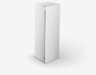

почему уже 17000 россиян попробовали activision

ActiVision |

Визин |

Черника форте |

Остальные препараты |
|
|---|---|---|---|---|
| Укрепление глазных мышц | ||||
| Восстановление сетчатки | ||||
| Нормализация кровообращения | ||||
| Расслабляющий эффект | ||||
| Увлажнение | ||||
| Устранение близорукости | ||||
| Снижение уровня гиперметропии |